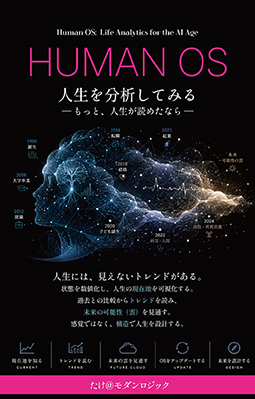

HUMAN OS
人生を分析してみる。
―― もっと、人生が読めたなら ――
あなたは今、自分の人生の「現在地」を、正確に言えるだろうか。健康、心、社会、経済、成長――人生を形づくる五つの領域を数値化し、株式市場の「一目均衡表」の発想を借りて、転換線・基準線・遅行線・雲という四本の線で一枚のチャートに描く。バラバラだったキャリア理論を統合し、AIという新しい道具と共に人生を試算する、新しい人生分析の一冊。
著者：たけ＠モダンロジック ／ Kindle版

本書の紹介動画
あなたは今、自分の人生の「現在地」を、正確に言えるだろうか。
仕事は？心は？人間関係は？お金は？健康は？――聞かれてみると、答えに詰まる人がほとんどだ
健康診断は毎年受けるのに、自分の「心」や「人間関係」に点数をつけたことは、一度もない
傍から見れば順調なのに、毎晩のように「このままでいいのだろうか」という漠然とした不安を抱えている
転職するべきか、休むべきか。答えを「感覚」と「他人との比較」でしか探せない
性格診断や適職診断は受けたことがある。しかし「半年後の自分」までは、どのツールも教えてくれない
気づいたときには、健康もお金も人間関係も、すでに何ヶ月も前から静かに傾いていた
同じ出来事なのに、平然としていられる時期と、打ちのめされる時期がある。その差は、出来事ではなく「状態」にある
人生は、「出来事」ではなく「状態」で決まる。
その状態は、株式市場の一目均衡表と同じ発想で、一枚のチャートとして描くことができる
「診断して終わる」自己理解（多くの人がハマる罠）
強みや性格を一度診断して、そこで思考が止まってしまう
- ✓ストレングスファインダー、性格診断、適職診断――どれも「点」の診断で終わる
- ✓診断結果を、動かしようのない固定的な性格として受け止めてしまう
- ✓半年後の自分が、その診断結果とどう違っているのかは、誰も教えてくれない
- ✓出来事のせいにしている限り、出来事が変わるのをただ待つしかない
一目均衡表という発想（本書のアプローチ）
価格に加えて「時間」の軸を組み込んだ、日本発のテクニカル分析を人生に転用する
- ✓人生を「身体・心・社会・経済・成長」の五つの領域で数値化する
- ✓転換線・基準線・遅行線・雲、四本の線で「現在地・勢い・過去比較・余力」を同時に見る
- ✓性格に見えるものの多くは、「そのときの状態」が生み出した一時的なパターンにすぎない
- ✓出来事は選べなくても、OS（反応の仕組み）はいつでもアップデートできる
人生を測る、五つの領域
100点満点で自己評価するだけでいい。大切なのは、完璧さではなく、続けること
身体
睡眠、運動、疲労、体力、健康状態
心
幸福感、不安、ストレス、集中力、自己効力感
社会
友人関係、家族関係、会社での関係、信用、評判
経済
資産、収入、支出のバランス、自由に使える時間
成長
読書量、経験の幅、AIなど新しい技術の活用、学習量、創造性
四本の線で、人生を一枚のチャートにする
一目均衡表の発想を借りて、人生に四つの線を引く
人生の転換線Life Conversion Line
直近一、二ヶ月ほどの状態を映す、短期の線。ちょっとした変化にも敏感に反応する「最近の自分」
人生の基準線Life Base Line
過去一、二年ほどの長期の平均。簡単には動かない「本来の自分の水準」、人生の巡航速度
人生の遅行線Life Lagging Line
今の点数を、あえて半年前・一年前にずらして重ねる、答え合わせの線
人生の雲Life Cloud
貯蓄、頼れる人間関係、健康の余力、スキルの幅――この先に広がる選択肢とリスクの範囲
転換線が基準線を上回り、雲も厚く、遅行線も過去を上抜けている――この四つがそろった状態を、本書では「三役好転」と呼ぶ。
バラバラだったキャリア理論を、一枚のチャートに統合する
スーパー、シャイン、ホランド、サビカス、ホール、クランボルツ――それぞれの理論は、同じHUMAN OSを異なる角度から観測していたにすぎない
スーパーRole
ライフキャリアレインボー ―― 役割。人生は複数の役割の重なり。「社会」領域の土台となる考え方
シャインValues
キャリアアンカー ―― 価値観。簡単には書き換わらない、OSの「初期設定」にあたる部分
ホランドFit
職業興味理論 ―― 適性。OSが最も効率よく、無理なく動ける環境との「相性」
サビカスStory
キャリア構成理論 ―― 人生物語。過去をどう語り直すか。遅行線の役割と重なる
ホールAdaptability
プロティアンキャリア ―― 適応力。「OSのアップデート能力」そのもの。雲の厚みと接続する
クランボルツChance
計画的偶発性理論 ―― 偶然を活かす力。雲が厚い人ほど、思いがけない偶然にしなやかに乗れる
マンダラチャート／IKIGAIState Design
大谷翔平選手のマンダラチャートは、目標達成シートである以前に「良い状態を設計する地図」だった。五つの領域を分解し、行動へ落とし込む――この解像度を上げる作業を、第7章ではAIとの対話で行う
人生の転換点は、「トレンドの転換」として読める
燃え尽き、転職、結婚、起業、介護――どれも、何ヶ月も前から静かに予兆が現れている
燃え尽き ―― 下降トレンドの見落とし
健康と心の点数が下がり続けても、成果だけは上がって見える。だから「順調」に見えてしまう
転職 ―― 価値観と現実の乖離
点数そのものより、基準線という長期の水準が、時間をかけても上向く気配がないかを見る
結婚 ―― 上昇トレンドへの転換
社会の領域が力強く上抜け、支え合う相手を得ることで、雲もまた厚みを増す
起業 ―― 雲の厚みが試される瞬間
見るべきは勢いより、貯蓄・人間関係・スキルの幅という雲の厚み
介護 ―― 新しい役割の急な追加
備えのない衝撃に対する、最も現実的な保険は、平時のうちに厚くしておいた雲だけ
AI時代 ―― 市場全体のトレンド転換
狩猟採集・農耕・産業革命・情報社会に続く、「世の中に求められるOS」の次の世代交代
AIは、経験するしかなかった未来を、試算できる時代に変える
AIは占い師ではない。しかしこれまでのデータをもとに、「もしこの選択をしたら」を何通りも試算できる、初めての道具になる
複数の未来を試算する
「転職した場合」「学び直しに専念した場合」――それぞれの選択肢で五つの領域がどう動きそうかを、事前に、無料で、何度でも試算できる
予兆を人間より早く見つける
毎晩五分の対話を積み重ねると、AIは「先週から疲れたという言葉が増えている」と、自分では気づきにくい下降トレンドの入り口を教えてくれる
解像度を上げる
「身体とは何で構成されていますか」と問い続けることで、マンダラの九マスが、埋めるものではなく自然と浮かび上がるものに変わる
あなただけの「HUMAN OS Dashboard」を、今すぐ完成させる
第8章で紹介する五つのステップを、その場で動かせる無料の診断ツールにしました
HUMAN OS Dashboard 診断
スライダーを動かすだけで、Life Index・レーダーチャート・トレンド・雲の厚み・モメンタムが、その場で一枚のダッシュボードになります。数値はブラウザの外に送信されません。
HUMAN OS Dashboardを試す現在地を測る
七つの項目を100点満点で採点
Life Indexを出す
平均して総合スコアを出す
トレンドを見る
転換線と基準線の関係を見る
雲の厚みを確認する
貯蓄・人間関係・余力を評価
モメンタムを記録する
前回との差分で勢いを見る
こんな方におすすめです
目次
本書の使い方・全3部8章・おわりに・巻末付録で構成
人生にも、「現在地」がある
一目均衡表という発想に出会い、人生も同じように読めるのではないかと気づいた出発点
人生は「状態」で決まる
本書全体の土台となる考え方
人生は「状態」で決まる
出来事ではなく状態が、認知・感情・行動・結果を決めている
人生の現在地は見える化できる
身体・心・社会・経済・成長、五つの領域を数値化する【コラム：ジャーナリングとの違い】
HUMAN OSという考え方
入力→認知→感情→身体→行動→結果→学習→OS更新。生存戦略として設計されたOSの正体
人生を一枚のチャートにする
本書の中核となる技術
人生の一目均衡表
転換線・基準線・遅行線・雲。四本の線を人生に引く【コラム：なぜ「一定の周期」で振り返るとよいのか】
キャリア理論を統合する
スーパー、シャイン、ホランド、サビカス、ホール、クランボルツ、マンダラチャートを一枚のチャートに重ねる
人生のトレンドを読む
燃え尽き、転職、結婚、起業、介護、AI時代――転換点をトレンドの変化として読み解く
AIと共に、人生を設計する
実践のパート
AIが人生設計を変える
複数の未来をあらかじめ試算する／予兆を見守る伴走者としてのAI
あなたの人生を設計する
五つのステップで、あなただけのHUMAN OS Dashboardを完成させる【コラム：デジタルツールを使う場合】
現在地を知る人になる
人生は、経験だけで理解する時代から、分析して設計する時代へ
HUMAN OS 用語集
Life Index、Life Trend、Life Cloud、Momentumなど、本書の主要用語をまとめて収録
現在地が分かれば、迷う時間は減る。
転換線・基準線・遅行線・雲という四つの線と、バラバラだったキャリア理論の統合、そしてAIとの実践方法まで。本書は、人生を「分析して設計する」ための、最初の一冊である。
巻末には、本書の用語をまとめたHUMAN OS用語集も収録。